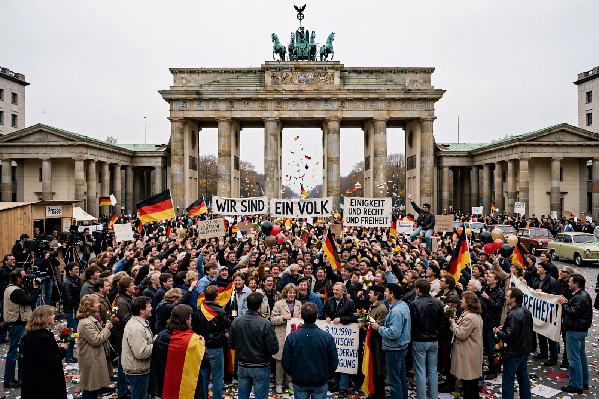

Helmut Kohl

| Helmut Kohl | |
|---|---|
| Born | 3 April 1930, Ludwigshafen, Weimar Germany |
| Died | 16 June 2017, Ludwigshafen, Germany |
| Office | Chancellor of West Germany / Germany (1982–1998) |
| Party | Christian Democratic Union (CDU) |
| Known for | German reunification; European integration and the euro |
Helmut Josef Michael Kohl (3 April 1930 – 16 June 2017) was a German politician who served as Chancellor of the Federal Republic of Germany from 1982 to 1998, first of West Germany and, from 1990, of the reunified country. His 16-year tenure is the longest of any German chancellor since Otto von Bismarck. Along with French President François Mitterrand, Kohl was the architect of the Maastricht Treaty, which established the European Union and the euro currency.
Rise to power
Born in Ludwigshafen in a Catholic, conservative family, Kohl joined the CDU as a schoolboy in 1946 and rose through Rhineland-Palatinate politics, serving as the state's minister-president from 1969 to 1976, when he reshaped its administration. As federal CDU chairman from 1973, he became Chancellor on 1 October 1982 through the first successful constructive vote of no confidence in the Bundestag, replacing Helmut Schmidt.
Reunification
When the Berlin Wall fell on 9 November 1989, Kohl seized the moment: within weeks he presented a ten-point programme for German unity, negotiated the Two Plus Four Treaty with the Allied powers, secured Soviet agreement (with substantial German financial support) and oversaw monetary, economic and social union with East Germany on 1 July 1990. On 3 October 1990 Germany was formally reunified, earning Kohl the title "Chancellor of Unity" (Kanzler der Einheit). Critics faulted the economic costs and the rapid 1:1 currency conversion, which devastated East German industry.
Later years
Kohl lost the 1998 election to Gerhard Schröder. His reputation was badly damaged by the CDU donations scandal of 1999–2000, in which he admitted accepting undeclared donations but refused, "on his word of honour", to name the donors. He died in 2017 and was honoured with a European act of state in Strasbourg — the first of its kind — before burial in Speyer.
See also: Willy Brandt · Angela Merkel · German reunification · Maastricht Treaty